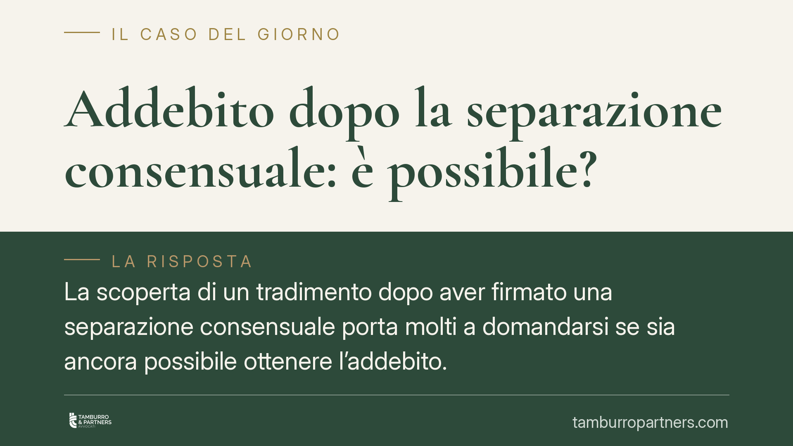

Addebito dopo la separazione consensuale: è possibile?
La scoperta di un tradimento dopo aver firmato una separazione consensuale porta molti a domandarsi se sia ancora possibile ottenere l'addebito. Di seguito si analizza perché la stabilità degli accordi consensuali prevale, quando restano margini d'azione e quali strumenti risarcitori autonomi la legge riconosce a fronte di infedeltà gravi.

Il caso tipico
Una coppia definisce la fine del matrimonio con una separazione consensuale: nessuna colpa dichiarata, condizioni condivise, omologazione del giudice. Mesi dopo, uno dei coniugi scopre elementi che fanno pensare a un tradimento risalente al periodo della convivenza. La domanda ricorrente è se, a quel punto, sia possibile tornare indietro e chiedere l'addebito.
La risposta, salvo situazioni particolari, è negativa. E la ragione è strutturale, non formale.
Inquadramento normativo
L'addebito della separazione è disciplinato dall'art. 151, comma 2, cod. civ.: il giudice, su richiesta di parte, può dichiarare a quale coniuge sia addebitabile la separazione, quando la condotta di uno di essi risulti contraria ai doveri del matrimonio. È uno strumento che vive esclusivamente all'interno della separazione giudiziale, cioè del giudizio contenzioso in cui si accerta la responsabilità nella crisi coniugale.
La separazione consensuale segue una logica opposta. I coniugi rinunciano all'accertamento della colpa e si accordano sulle condizioni: proprio questa rinuncia all'indagine sulle responsabilità è il presupposto stesso dell'istituto. Chiedere l'addebito dopo aver scelto la via consensuale significherebbe rimettere in discussione ciò a cui si è consapevolmente rinunciato. Per questo la stabilità dell'accordo omologato prevale.
Un correttivo esiste, ma è limitato: la conversione del procedimento in giudiziale è ipotizzabile solo prima che la separazione consensuale sia perfezionata. A omologazione avvenuta, la strada dell'addebito è preclusa.
Perché l'infedeltà non basta da sola
Anche in sede giudiziale, l'infedeltà non determina automaticamente l'addebito. Secondo un orientamento della Cassazione civile in tema di addebito, occorre dimostrare il nesso causale tra la violazione del dovere di fedeltà e la crisi coniugale: l'infedeltà deve essere la causa diretta della rottura, non un fattore sopravvenuto rispetto a un legame già logorato o comunque privo di incidenza determinante. Se il matrimonio era di fatto già compromesso, il tradimento successivo non fonda l'addebito.
Questo rilievo, valido nel giudizio contenzioso, chiarisce a maggior ragione perché la via consensuale, che quel nesso non lo indaga affatto, non consente ripensamenti postumi.
L'alternativa: l'azione risarcitoria autonoma
Addebito e risarcimento del danno viaggiano su binari distinti. L'assenza dell'addebito non esclude, in linea teorica, la possibilità di agire in via autonoma per il ristoro dei danni derivanti da una condotta infedele particolarmente lesiva della dignità della persona.
Si tratta di un'azione di responsabilità civile, fondata sui principi generali del danno ingiusto, che prescinde dal tipo di separazione scelto. La soglia, tuttavia, è alta: non ogni infedeltà è risarcibile, ma solo quella che, per modalità e gravità, integra una lesione di diritti fondamentali della persona. È un accertamento che richiede prova rigorosa e non si sovrappone alla valutazione sull'addebito.
Gli effetti che l'addebito avrebbe comportato
Comprendere cosa si perde aiuta a valutare la scelta iniziale. Il coniuge cui la separazione è addebitata perde il diritto al mantenimento, potendo al più ottenere gli alimenti se in stato di bisogno (art. 156 cod. civ.), e perde i diritti successori nei confronti dell'altro coniuge, conservando solo, in presenza dei relativi presupposti, il diritto a un assegno vitalizio a carico dell'eredità (art. 548 cod. civ.). Sono conseguenze rilevanti, che non si producono nella separazione consensuale in cui nessun addebito è pronunciato.
Cosa fare in concreto
- È opportuno valutare con attenzione, prima della firma, se sussistano elementi per una separazione giudiziale con richiesta di addebito, poiché la scelta consensuale preclude ripensamenti successivi.
- È consigliabile conservare gli elementi documentali relativi alle circostanze rilevanti della crisi, utili sia in sede giudiziale sia per un'eventuale azione risarcitoria.
- È utile distinguere fin da subito il piano dell'addebito da quello del risarcimento del danno, che restano autonomi e rispondono a presupposti diversi.
- Va tenuto presente il profilo temporale: le azioni non sono esperibili senza limiti di tempo e i termini vanno verificati rispetto alla singola fattispecie.
- Trattandosi di valutazioni tecniche complesse, la concreta percorribilità di ciascuna iniziativa va vagliata caso per caso.
In sintesi
Dopo una separazione consensuale l'addebito non è, di regola, richiedibile: la rinuncia all'accertamento della colpa è connaturata alla scelta consensuale. Restano margini, distinti e più stringenti, sul piano risarcitorio, quando l'infedeltà assume connotati di particolare gravità. La riflessione più utile, tuttavia, si colloca a monte: nel momento in cui si decide tra via consensuale e via giudiziale.
Ogni famiglia ha il suo equilibrio.
Separazione, divorzio, affidamento, assegno: se vuoi un confronto riservato su una specifica situazione, scrivi allo studio. Ti rispondiamo entro un giorno lavorativo.